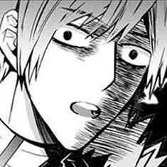
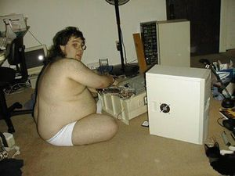

Elsword
 De: La Frikipedia, la enciclopedia extremadamente seria.
De: La Frikipedia, la enciclopedia extremadamente seria.

|
ATENCIÓN
Este artículo debería separarse en varios artículos. Ya que o bien habla de varios temas a la vez o que contiene definiciones o es tan extenso que debería ser dividido. Así que entra y corta, fragmenta, despedaza, trincha, escinde, parte, divide, separa, aisla, fracciona, amputa, cercena y secciona el artículo en varios de ellos. Si no sabes como empezar mira la discusión del artículo. Y no olvides desambiguar después.
|
De la serie Videojuegos:
Elsword

| Desarrollado por:
|
kog(koreanos on game)
|
| Distribuido por:
|
una cajita con muchos ravens
|
| Diseñado por:
|
nasods con problemas de datas
|
| Motor
|
K-CHING
|
| Género(s)
|
dar ostias a todo el q este frente a ti, incluso un NPC
|
| Fecha de lanzamiento:
|
luego de la destrucción de la tierra
|
| Modos de juego:
|
Aventura, o PvP (mundo de las ostias)& PvE (tu contra el puto mundo)
|
| Requisitos:
|
no tener la necesidad de: comer, dormir, mear,tener amigos o cagar, básicamente vivir.
|
| Disponible en:
|
cualquier tienda otako
|
| Formatos:
|
exe. lente de contacto
|
| Edades:
|
cualquiera q tenga 1 deddo para spamear
|
| Puntuaciones:
|
No vale la pena si eres spamer
|
No es japones, sino Koreano
«"juega elsword es divertido"»
~ amigo incógnito, haciéndote dudar de tu existencia si jugar o no riéndose malvadamente por dentro
«por fin eh llegado a lvl70 »
~ Tu, un dia antes de la actualización a lvl80
«Wow que buen juego!! me creare todos los personajes y casheare hasta morir»
~ Principiante noob. Después de 1 semana se aburrió por la monotonía de el juego , de los spamers , laggers , flammers ,Gm's , etc.
Elsword Online es un juego creado por los chinos Koreanos para apoderarse de tu vida y planean controlar la mente de las personas que lo jueguen.
sucesor de Grand Chase con mas graficos, jugabilidad y (y datas malas)
Es el único servidor en español es el de Gameforge, y en español de españa (Si eres latino, ¡¡YA SACARON EL SERVER!!Texto en negritaAlSexo Asexo)
Jugabilidad
Empezando a jugar
compra el juego en narnia y lo instalas en tu microondas, para después darte cuenta que tienes que esperar 1 siglo para bajar el juego (datas malas). Cuando ya terminaste de descargarlo, te das con la sorpresa que tienes que esperar para que actualice, por ende, otro siglo más (y así sera para SIEMPRE, muajajaja) ya termino de descargar! Pero te das cuenta que todavía no puedes jugar porque te a salido un error en el momento de la descargar y tienes que reinstalar(mandas a tomar por culo el PC) cuando ya te bajaste el juego por segunda ves y por fin puedes loggearte, te encontraras con que la pantalla de inicio no responde. (pasa un 97,6% de las veces)
Ya pero... ¿Como empiezo?
Tienes que empezar con uno de los 6 Personajes que no hacen falta desbloquear, pero solo puedes crearte 3 (Jodida suerte). Cada uno tiene habilidades que puedes realizar presionando A, S, D, C o Todos a la vez... Ejemplo : A (Animar), S (Suplicar al enemigo), D (Despertar) y C (Cagar), pero las técnicas suben de nivel y cada vez que suben se mejoran, Ejemplo: S (Suplicar al enemigo mientras lloras).
Aquí tienes que elegir uno de los 2 caminos para avanzar de clases por ejemplo: El camino del narcotraficante de merca (Guerrero ---> Camello ---> Narcotraficante mundial) o El camino de la prostitución (Puta ----> Súper Puta ----> Princesa Disney IP anónima)
PvE o JcE
Es un modo de donde 4 Jugadores, entran en un escenario para follar hacer misiones creadas por calamardo y batman Porno, En las que ahora no tienes 3 vidas, aquí si te matan te jodes...
Aqui solo hay calabozos comunes , Aquí todo se agarra de una, si lo agarras bien, si no te jodes...
Jodido contra Jodido
Es un modo de juego super pelotudo donde puedes batirte a combate demostrando tu superioridad ante los demas
(Por que en vida real no eres nada) hay distintos modos de juego , te puedes vatir 1 vs 1 , 2 vs 2 y 3 vs 3
En absolutamente todos los modos hay un lag de mierda , asi que te recomiendo irte del juego.
- Ya pero quiero ganar en jcj que hago ?
La respuesta a esta pregunta es sencilla.. ya que el 100% Del ¨Top 100¨ de Elsword usa estos trucos super legales y 100% confiables para llegar a lo mas alto (Lamentablemente en tu vida real seguiras siendo una mierda)
-EL Cable Plugin: Método utilizado mayormente por los sin vida .. el truco consiste en tener el router del internet al lado.. y estar desconectando y conectado el cable consecutivamente para provocarse auto lag .. ideal si deseas ser ¨PRO¨ en este juego, el 90 % del ¨TOP 100¨de elsword lo usa.
-El Pajero desenfrenado: Los ¨Pajeros desenfrenados¨ son jugadores que consiguieron estar en el top de Elsword , abriendo paginas externas al juego .. por ejemplo youtube , youporn , brazzer's , xvideos y todo lo demas para provocarse lagg, y asi cuando esten en medio de una pelea ganar facilmente , el 100% de los ¨Sin vida 100 digo TOP 100 lo utiliza.
-El Pobre: Son los tipicos jugadores que juegan en tostadoras y jalan internet del vecino o roban wi-fi , estos son los mas abundantes en el juego (Por no decir todos)
-El Spamer: Son los jugadores que solo saben hacer la misma cosa una y otra ves , este tipo de jugador no es tan jodido ya que en el juego abunda lo repetitivo asi que no es tan malo
-El Marido y Mujer: Este dúo es el peligroso , la mayoría de jugadores ¨Marido y Mujer¨ entran a jcj juntos y hacen todo juntos, esto hace que sean inseparables .. juegan juntos , cagan juntos , tragan juntos , duermen juntos y toda esa mierda (Estos son los mas gays del juego)(Si los retas individualmente se van a ir a la mierda por que no pueden ganar sin el otro)
-El Flamer : Son los jugadores que en medio de la batalla se acuerdan de tu mama , tu papa , tu hermana , tu tía , tu abuela , tu bisabuela y toda tu familia
-El Presumido: Estos jugadores son los mas abundantes del ¨Top 100¨ , son aquellos que creen que por estar en el top 100 dicen ser los mejores y te lo presumen en medio de la pelea (Lamentablemente cuando les haces acordar de su vida fuera del juego se ponen a llorar)
-El Runner : Son los jugadores que se la pasan corriendo en toda la pelea para solo joderte mientras los persigues y matarte de un golpe .
-Las Aishas : Los jugadores ¨Las Aishas¨ son los niñatos que usan al personaje¨Aisha¨ por ser una maga , al ser una maga puede teletransportarse y cargar mana como si no hubiera mañana .. y así joderte la vida facilmente a puro spam de bolitas y habilidades
-Los Chetados : Suelen ser personajes secundarios con mucha experiencia, o personas muy aburridas que no tienen nada mejor que hacer, por lo que si te los encuentras en jcj lo mejor que puedes hacer es correr como una niña de cinco años por tu vida
-El Buen Jugador : Son jugadores mitologicos y de fantasia , cuenta la leyenda que a principios de elsword cuando ganabas en jcj , ¨El Buen Jugador¨ te decia ¨Buen juego¨ , ¨Bien jugado¨ , ¨Quieres una revancha , me diverti !¨ , ¨Buena pelea .. si sabes usar a tu personaje¨ ... este tipo de jugadores son solo Ficción . asi que nunca encontraras a uno en este juego de mierda
-El Noob : Son los típicos noobs que pierden con quién sea, haciendo que cuando te toca pelear con uno de estos, sea victoria segura
Requisitos para jugar Elsword Online
- Ser un friki de 5 o mas años de edad.
- No tener ganas de cagar, dormir, comer, mear, etc.
- No tener novia (
Esto es muy importante aunque la mayoria que juega Elsword no tienen y nunca tendran).
- Pasar 25 horas en la computadora.
- Tener muchos amigos en el juego (
lo que dije es mentira, el 99.99% de los que juegan Elsword no conocen a nadie dentro del juego).
- Tener un microondas en ves de pc.
- Sudar virginidad (Este es el mas importante)
Personajes
Véase: Anexo:Personajes de Elsword
Clases
Como en otros juegos cada personaje puede cambiar de clase para volverse mas fuerte y mas cabrón, este juego no es la exepción .. cada uno eleva con gran fuerza su poder cambiando su cuerpo como sus habilidades
 Expresión de Raven al enterarse que Chunicienta es hombre.
Primeros Jobs
Primeras Clases de Elespada
Caballero de la espada: Elespada se deja de mariconerias y de niñadas para aumentar su habilidad con la (paja) espada , mejorando sus tecnicas mas q nunca . Esta clase se te da mana por todo y dar grandes madr@z0s (a puro spam) entre sus habilidades las mas destacadas son:
- Ambicion: Escudo Marica que te hace inmune a todos los daños y aunque recibas putazos no te paran
- Rompe Armaduras: Habilidad de 30 de mana que te rompe el orto y te deja invulnerable para que Elespada te viole sin piedad
- Cuchilla ArmageNOOB: Habilidad que se sale de tu pantalla , cuando Elespada la invoca , solo existe una palabra SPAAAM.
Caballero Mago: Elespada arto de que se burlen de el por su gran mariconeria trata de aprender el arte de prender en llamas a todos los que lo molestan logrando esta clase , con la ayuda de Eco (NPC inutíl del juego)absorvió algunos poderes magicos de un porro que se fumo , esta clase es equilibrada ya que te pega cuerpo a cuerpo y te tira bolas de fuego de lejos , entre sus habilidades mas destacadas tenemos:
- Megaexplosion: Elsword te mete la mano debajo de la ropa y hace que te prendas en fuego mientras el se rie de ti y se va mientras te incendias
- Ambicion: Escudo Marica que te hace inmune a todos los daños y aunque recibas putazos no te paran
- Espada de Fuego: Elespada se cree princesa y se lanza hacia los aires para despues caer con su tremenda espada y sacando fuego del suelo
- Garra de Fenix: Elespada despues de matar al pollo de Ruben , hace honor a su nombre y crea una habilidad capaz de invocar a dicho pollo
Caballero Protector: Elsword arto de ser el niño bueno invoca a los demonios para que le hagan mas fuerte , estos hacen un pacto con el y le dan una piedra negra que se lo tiene que meter en el orto para alcanzar el maximo nivel , ahora con su nuevo corte de pelo y su nueva espada ¨Corlunga¨es capaz de spamearte sin piedad , en sus habilidades mas rompe huevos tenemos:
- Carnicero Cruel ( pasiva ): Elespada con cada golpe te va quemando mana (
mas marica no puede ser)
- Escudo de espadas: Habilidad de 30 de mana super spameable , Elsword invoca pequeñas espadas que rondan a su alrededor provocandote sangrado por segundo y desvirgando tu pequeño y virginal ano.
- Ambicion: Escudo Marica que te hace inmune a todos los daños y aunque recibas putazos no te paran
- Espada Fantasma: Elsword invoca a los demonios mas malosos y estos se convierten en una espada fantasma que da mucho mello
- Revientaescorpiones: Elsword arto de estar, solo atrae a tu personaje con una pequeña espada, ligandote a el de por vida
Primeras Clases de la maga plana
Maga Suprema: Aisha cansada de que Elespada no le haga caso , intenta hacer magia para hacer crecer sus miserables pechos pero no lo consige , por lo contrario incrementa sus poderes elementales creando bolas de fuego y hielo gigantescas , entre sus habilidades mas castrosas tenemos:
- Proyectil Magico: Aisha invoca una bola de energia que te ronda y no te deja en paz hasta que estes muerto
- Meditacion : Aisha se queda un rato para para meditar de por que es ta tan plana , por ende hace que su mana cresca mas (
pero nunca sus tetas)
- Zancada de Llamas: Aisha se vuelve loca y se prende en fuego , dejando quemaduras de cuarto grado a todos sus rivales.
Maga Ocultista: Aisha tratando de conseguir mas poder para recuperar los que perdió (noob)invoca demonios y fantasmas para que le ayuden a conquistar a Elsword y asi poder dejar de ser virgen (nadie quiere alas planas)entre sus habilidades mas pendejas tenemos:
- Nube negra: Aisha se fuma un tremendo porro haciendo que todo a su alrededor se llene en humo y asi asfixiando en toxicidad a sus enemigos
- Piedra del infierno: Aisha invoca a una piedra con un ojo que da vueltitas y te pega duro
- Corte de plasma: Aisha se deja de tonterías y crea unos rashos laser's que te sacan la mierda por segundo
Maga de Combate: Aisha finalmente se dio cuenta de que la magia no da poder y se dedica a estudiar y mejorar su habilidad con la ¨vara¨,(aun que realmente lo único que logra es un combo de z que dura hasta la madre) pudiéndote hacer 1 paja por minuto, entre sus habilidades mas joputamente spameras tenemos:
- Robo de energia: Aisha se mete con tu mama y eso te deja inmune para robarte tu energía
- Maquillaje Mágico: Aisha cansada de ser la mas vulnerable no se le da mejor idea que convertirse en una idol pop y asi robar miradas y pájas de sus admiradores, pudiéndote darte 10 bolas en 1 minuto
- ASS de energía: Aisha harta de que nadie le "de", se le ocurre que le pueden dar por el ASS, entonces incrementa todo su poder en esa zona para después hacerlo explotar en tu cara y bajándote el 99.9% de tu vida
Primeras Clases de la Tetona
Tiradora de Guerra: Rena cansada de los acosadores y de que a cada rato le estan mirando las tetas , busca la forma de defenderse y que mejor forma que con patadas , entre sus habilidades tenemos:
- Indestructible ( pasiva ): Cuando rena esta con 0 de hp su gran poder de elfa le hace renacer.
- Ataque Brutal: Rena se deshace de sus enemigos con un ataque bien dado en los cojones
- Patada Baja: Rena te mete tremenda patada en los huevos que te deja sin hijos
Tiradora de Caza:Nuestra admirable elfa se va en busca de mas poder y decide reforzar aun mas sus habilidades con el arco esto hace que gane mayor velocidad y movimiento .. pudiendote meter un flechazo en los huevos desde muy lejos , entre sus habilidades mas putas tenemos:
- Disparo Cuaduple: Rena se ¨loquea¨ y entra en estado de invulnerabilidad disparando 4 flechas que te atraviesan todo el cuerpo
- Flecha Selectiva: Rena arta de que la espien los paparatzzis ideo una forma para que sus flechas persiguieran a sus oponentes jodiendolos hasta morir
- Trampa de Raices: Rena planta droga en el suelo y cuando tu estes pasando este te agarra y no te deja mover
- Lanza de Odín: Rena invoca al dios Odín , y como este es muy pajero y se la quiere follar a Rena , dispara 6 lanzas hacia sus pretendientes
Arquera de Erendil:Rena decidio por fin aceptar que es una bomba sexy , asi que decide volverse mas sexy aun , aumenta sus habilidades con su arco , su movilidad y compra ropa super ajustada para que resalte aun mas sus tetas pero eso si ! , siempre lleva un cuchillo por si la quieren violar , entre sus habilidades mas sexymente pendejas tenemos:
- Esfera del Viento: La tetona invoca una bola de energia de el ambiente que te explota y te saca volando
- Trampa Explosiva: Rena cuidado siempre sus espaldas invoca ramitas que con tecnologia avanzada explotan cuando las pisan
- Perdicion: Rena deja todo al azar este ataque es capas de reventarte el ojete de un golpe si tiene suerte
- Karma: Nuestra queridisima pechugona lanza unos rashos desde el suelo y te desvirgan desde el ano hasta la boca
Primeras Clases de el Nigga
Portador de Espada: Raven constantemente se esta pajeando pero se da cuenta que con el brazo nasod que posee se hace daño , asi que decíde incrementar sus habilidades con su espada y su velocidad .. tambien de paso se va al peluquero para que le dejen un corte super emo y asi demostrar su dolor por su prometida muerta , entre sus habilidades mas grotescas tenemos:
- Rasgatendones: Raven estudia medicina en Harvard y creé que la mejor manera de joder a sus adversarios es cortando los tendones , esta habilidad no te deja saltar y hace de que recojas el jabon para raven te de duro con su spam
- Triunfo Sangriento: Raven se creé vampiro y absorve la sangre de sus adversarios , por cada ataque que te pege el se cura
- Cuchilla de la Fiera: El nigga creé que la mejor manera de matar a sus adversarios es con un ¨golpe de molino¨e ahi la animacion de esta habilidad
Portador de la Chuchilla: Raven constantemente esta pensando en por que no copuló con su prometida , esto hace que se masturbe llegando a masturbarse de 30 a 40 veces al dia esto hace que su brazo nasod evolucione y se deforme , entre sus habilidades mas hyper pendejas tenemos:
- Bola Relampago: Raven invoca pinchos de la nada que te atraviesan todo el cuerpo dejandote incapacitado de por vida
- Golpe del Defensor: Raven dolido por su prometida decide sacrificarse (
Feel Like A Chaos) haciendo explotar su corazon
- Ataque Nuclear: El Nigga invoca a EE.UU y este hace caer una bomba Hiroshima en la cara de sus adversarios
Portador del Destino: Raven se esfuerza por ser mas fuerte , esto hace que el decida ser militar por el honor de sus amigos y de su prometida muerta , cambia toda su ropa por una mas cool y su brazo nasod se vuelve aun mas cool tambien tiene una nueva habilidad que nadie mas tiene el poder sobre-calentarse , esto se llega cada ves de que raven no puede aguantar la paja y se la hace en unos segundos .. tanta es la fuerza y la rabia inundan su brazo nasod incendiando todo a su paso , entre sus habilidades mas coolisticas tenemos:
- Mercenario Ferréo: Raven se deja de niñerias y se vuelve mazoquista aguantando toda clase de torturas
- Cañon Revolver: Aun mas Cool Raven cree que deveria disparar balas de su brazo nasod y asi lo consigue , pero el problema es como se las mete
- Arpon en Llamas : Raven salta todo macho para demostrar su superioridad ante los demas , despues se da unos giritos y te lanza un arpon para cazar ballenas y le prende fuego .. matandote de un golpe
- Giga Prominencia: El nigga incendia su braso nasod y da un golpe contra el suelo provocando terremotos y desastres naturales
Primeras Clases de Eve (la sin sexo)
Vengadora Nasod: Eve viaja y se da cuenta que los enemigos son mas fuertes esto hace que se vuelva mas Exotica y vengativa como ella es un robot este codigo lo tiene que programar en su sistema pero no se sabe que pasara , entre sus habilidades mas chichis tenemos:
- Golpe Explosivo: Eve lanza un consolador gigante y le pone explosivos , despues te atrapa en ellos y te hace volar en mil pedazos
- Trono de la Reina: Como todo una Prices@ Eve se cree la mejor y eso hace que suban sus estadísticas
- Golpe Destructor: Eve lanza 2 consoladores gigantes giratorios que te van penetrando por segundo y no te sueltan hasta que este satisfecha
Esperanza Nasod: Eve cansanda de su look se va al peluquero y hace que le pongan 2 moños despues de esto se da cuenta que tiene que volver a intentar renacer a su raza pero no puede por que es débil, asi que con sus robots voladores diseñan un ¨ayudante¨ para desestrezar a Eve cuando se sienta sola, un .. ¨consolador¨ asi es como nace ¨Oberon¨ el nuevo ¨juguetito¨ de Eve , entre sus habilidades mas guayz tenemos:
- Puño Celestial: Eve ordena a un Robot gigante deshacerce de su brazo para tirarles a sus objetivos
- Guardia Oberon: Eve invoca a Oberon para que le ayude a denfenderla y como este esta enamorado de ella hace lo que le ordene
- Cuchilla Ruidosa: Oberon se vuelve cocinante de sushi , esto hace que practique como cortar .. por ende practica con tus personajes destrozándolos en varios pedazitos
Electra Nasod:Eve se da cuenta de que puede ser mas bonita , asi que intenta ser mas ¨Moe¨ esto hace que se vuelva mas atractiva ala vista .. se arregla bien y se pone una flor en la cabeza enamorandote hasta mas no poder tambien esta clase se especializa en Rashos laser's , entre sus habilidades mas muac tenemos:
- Rayo de Partículas: Eve lanza unos rashos de sus manos atravesando tu corazon
- Dinamica Espectral (Pasiva) : Eve estudia ingieneria mecanica y se moderniza a si misma para incrementar a un mas sus poderes esto hace que pueda disparar sus rashos en varias direcciones
- Hélice de electrones: Eve cree que los iluminatis existen así que los invoca en forma de triangulo con un ojo que da vueltas y no te suelta hasta que te mueras
- Giga Caudal: Eve comienza a ver Dragon Ball (Todas las Sagas) y se vuelve fanática de Goku , esto hace que ella practique el hame hame ha! Hasta que lo consigue y te dispara un Hame Hame Ha .. que puede salirse de la pantalla de tu ordenador (cuidado).
Primeras Clases de Chunicienta
Guardian de la Furia: Chunicienta decide volverse mas resistente para poder aguantar mas los golpes y volviendose asi mazoquista , ahora ella sigue el ejemplo del guardian de Hamel que tambien era mazoquista , con un poco de tecnologia adapta su cañon para que sea mas pesado y asi poder defendese
entre sus habilidades mas maricas tenemos:
- Pandemonio: Chunicienta dolida por todo lo que le ocurrio grita como loca para demostrar su dolor, esto hace que sus enemigos sangren por los odio y no puedan hacer habilidades
- Dolor de Cabaldog: Chunicienta cada ves que se acuerda que es un chico pero la dibujaron como chica.. hace que ella quiera destruir el universo por eso invoca a ¨Cabaldog¨ , para que demuestre su poder junto con ella
- Loca Furia Artillera: Chunicienta arta , arta de todo.. hace que su cañon dispare 6 balas en la tierra creando un terremoto gigantesto que te destruye por completo
Guardian Tirador: Mientras compraba ropa de ultima moda , chunicienta se da cuenta que su cañon es demasiado pesado y muy lento por eso decide cambiar de arma.. y se compra una pistola que llama ¨Cañon Plateado¨ ahora esta lista para reventarte a balazos , entre sus habilidades mas spameras tenemos:
- Modificación de riflado ( pasiva ): Chunicienta es adicta a los criticos esto hace que le inyecte heroina en sus pistolas probocando mayor daño
- Golpe de Artilleria : Chuni dispara un misil atomico en los huevos de su adversario quitando mas de 5000000 de vida
- Disparo en la Cabeza: Chunicienta dispara en la cabeza por que ya esta arta que se burlen de ella
Guardian Artillero: Chunicienta en su camino por ser la mejor encuentra una ¨piedra protectora¨ y se da cuenta que esta hecha con alquimia .. esto hace que incremente sus habilidades con su cañon volviendose mas spamer aun , entre sus habilidades mas pendejis tenemos:
- Cañon del Caos: Chuni enojada de la vida hace que su cañon dispare 10 balas por los 2 lados , demostrando asi su increible poder
- Marca del Comandante: Chunicienta invoca a los guardianes de Hamel dandole ordenes de quien tenga la marca disparen a mas no poder , por ende , si te cae esta habilidad no podras hacer nada por que te spameara destrozandote el orto
- Lluvia de Granadas:Como chunicienta paso su vida entrenando para denfender a Hamel nunca jugo con pelotas , esto hace que quiera jugar con ellas ahora que esta grande .. se hace la idea que las granadas son pelotas y las dispara a sus adversarios para ¨jugar¨.
Primeras Clases de la Zorrita Jugoza
Pequeña Hsien: Ara continua su viaje en busca de su hermano destruye mounstros y adversarios cada ves mas fuertes y se da cuenta que esta creciendo pero ella no lo quiere aceptar ya que le gusta su altura .. por eso se e de llamar ¨pequeña¨ y Hsien es una palabra que encontro por ahí , entre sus habilidades mas zorristicas tenemos:
- Arte Secreta del Dragon ( Habilidad que consta de 3 habilidades) : Para activar este ¨Arte¨primero debes aprender bien la tectica del manejo de la lanza junto con Ara , ella ademas de tener enormes senos tambien tiene buenas habilidades por eso , decide ¨fusionarlas¨creando tecnicas aun mas destructivas, Ara se las ingenio para combinar ¨Estocada Gancho¨ con ¨Orden¨ y Finalmente ¨Cuchilla Lunar¨ .. y asi destrosarte el ano de 1 solo golpe
Pequeña Diablesa: Como el caballero protector y la maga ocultista , Ara tambien quiere dejar de ser buena , por eso le vende su alma al diablo pudiendo obtener mas poder y convenciendo a los demas de jugar la guija , entre sus habilidades mas demoniacas tenemos:
- Arte Screta del Lobo ( Habilidad que Consta de 3 habilidades) : Ara se las ingenio para convocar lobos demoniacos por eso decide encadenar 3 habilidades ¨cuña de viento¨ con ¨Zarpa de Lobo¨y finalmente ¨Lanza Lobuna¨ le llevaron a alcanzar un magnifico poder demoniaco
- Jaula de Lanzas: Ara esta convencida que hay que tratar a los demas como animales , asi que decide encerrar a su adversario en una jaula
- Transformaná: Ara sacrifica parte de su mana en un ritual satanico para poder ganar mas ¨orbes¨ demoniacos y asi incrementar el tamaño de sus senos
Pequeña Fantasma: Ara comienza a descubrir que puede incrementar aun mas el tamaño de sus ¨ojos ¨ asi que se va a la aldea donde yacen muertos su familia , cuando llego noto un extraño poder , era el poder fantasmal , Eun (Zorro que fol lo a Ara) le dijo que podia conseguir mucho poder si hacia un pacto con los fantasmas mas malulos .. Ara acepto y fusiono su cuerpo con estos fantasmas , ahora mas sexy que nunca y con los screamer's de internet no te dejaran dormir , entre sus habilidades mas fantabulosas tenemos:
- Arte Secreto Mil Espíritus ( Habilidad que consta de 3 habilidades): Ara encadena 3 habilidades para sacar lo maximo de su poder , invoca mil espiritus que te atormetaran dia y noche
- Drena Maná: Ara se pone en una pose muy seductora obligandote a darle todo tu maná
- Caminata Espectral: Ara se fusiona con los fantasmas y se vuelve una sombra para espiarte y comprobar si te mast urbas con ella
Primeras Clases de la Abandona Hermanos
Maestra del Esgrima: Elesis intenta ser mas poderosa para hacerce respetar antes los que quieren que ¨cobre barato¨ por eso se consigue una mejor a su espada ¨claymore¨ dandole ataques mas debastadores que te haran llorar como marica , entre sus habilidades mas mierdas tenemos:
- Explosion Espiral: Elesis sujeta su gran claymore y la arrastra contra el suelo , pegandote mucha tierra explosiva en los ojos
- Poder Dividido: Elesis con el mango de su espada te destroza la armadura , disminuyendo tus estadisticas y dejandote desnudo
- Espada Victoriosa:Elesis no consige a un hombre que la haga sentir mujer asi que decide crear su propia ¨compañia¨ , invoca un espadon gigantesto capas de entrarte por el orto y salirte por la boca , llenandola de placer a Elesis
- Hídalgia ( pasiva ) : Elesis cree que como no hay ningun hombre para ella , debe tomar el papel de uno por ende.. cada ves que alguien baje su vida ella recive un buff en sus ataques y en sus defensas
Pyro-Caballera: Elesis decide que cargar su pesada Claymore le hace muy mal a su manicure asi que decide especializarse en ataques magicos por eso se vuelve piro-mana .. prendiendo tu casa en cuestion de segundos , entre sus habilidades mas pendejas tenemos:
- MegaExplosion: Elesis miro a Elespada haciendo este ataque y por eso cree que como es la mayor debe mejorarlo, Contra un adversario Elesis agarra los huevos del oponente y les prende en fuego disminuyendo drasticamente su probabilidad de tener hijos
- Concentracion Potenciada ( pasiva ) : Elesis loca por poder hace que sus ataques tengan mucho daño critico
- Fuego Eterno : Elesis libera toda su frustración sexual , que esta en forma de ráfaga de fuego incendiando a todo el que se le acerque
Caballera Oscura: Elesis deja atras toda esa mie rda de ser comandante de los caballeros rojos , se vuelve mas sádica y malosa. Igual que la maga ocultista
comienza a jugar la guija y charlie charlie para poder contactar demonios y asi hacerce mas poderosa, cabe resaltar que esta Elesis es la mas puta de las 3 ya que le encanta el ¨beso negro¨ , y creeme , no querras hacerselo , entre sus habilidadas mas putas tenemos:
- Inyección: Habilidad spamera hijo de re mil putas , Elesis invoca espaditas al-rededor de ella que te hacen daño por segundo que desvirgan tu ano
- Fuerza Oscura ( pasiva ): Despues de terminar la carrera de Ginecologia en Oxford , Elesis aprende el arte y el dominio de la sangre y los fluidos , ahora cada vez que te ataque tendra el poder de regenerarse o hacerte daños criticos , segun cuan drogada este Elesis
- Fantasma en Llamas: Elesis invoca un demonio maloso que se prende en llamas y te atrae hacia ella y asi Elesis puede violarte una y otra vez
Primeras Clases de el Acosador de Robots
Rastreador psíquico:Add despues de estar leyendo puro porno de nasod se crea un brazo mecanico para darse ¨ auto-pajas¨
Esto es denomiado ¨Armadura Nasod¨ , este experimento de Add para darse auto-placer se convirtio en una gran invencion , desafia los
10 mandamientos y las leyes de la fisica .. adicto por mas poder para poder conquistar a Eve , Entre sus habilidades mas mecanicas tenemos:
- Cañon De Pulsos: Habilidad super pendeja e Hyper spamer , Add te lanza 4 bolas de electricidad dejandote agujereado todo el estomago
- Electroterremoto: Add Desafia a la madre naturaleza y fusiona la tierra con electricidad desatando todo el caoz del mundo y dejandote sin vida
- Armadura nasod - Montura marcial(Pasiva) : Pasiva super pendeja , Despues de que Add alla terminado de usarte como muñeco sexual puede continuar
violandote con fuertes golpes y patadas hasta acabar con tu miserable virginidad
Rastreador Autómata: En un Viaje para encontrar videos eroticos sobre nasod , Add termina en la cuidad de Elder , en esta cuidad Add conoce a una chica llamada Ecco (la misma npc de mierda de las otras historias) Ecco le da a Add unos archivos confidenciales sobre los nasod , Add descubre que puede ser mas agil y
mas poderoso con estos archivos , se inunda mas de conocimiento y mejora sus pequeños consoladores volantes llamados ¨Dinamos¨ aparte de estos , Add tambien puede
Fabricar ¨Drones¨ lo cual los usa como camaras para espiar las faldas de las chicas ( por debajo ) , entre sus habilidades mas mierderas tenemos:
- Electro Tanque:Habilidad super pendeja , Add dispara un rasho laser destrosandote toda la cabeza
- Los Registros Ocultos(Pasiva): En el sotano de su casa Add consigue unos registros sobre el poder Nasod , incrementando mucho su mana
- Buscador Fantasmal : Add hace un pacto con los fantasmas mas malosos , haciendo que te persigan dia y noche
Rastreador Espacio temporal: Despues de que Add se cansara de Eve (ya que estaba muy usada por Oberon y Elespada) , resurgio su complejo de Edipo , asi que decidio follarse a su madre (que esta bien buena) , pero lamentablemente esta ya estaba muerta. Comenzo a hacer experimentos dia tras dia para poder viajar al pasado y follarse a su madre , hasta que lo logro . Ahora Add es capaz de viajar al pasado , presente y futuro , podiendote joder la vida una y otra y otra vez , Cabe resaltar que esta clase es la mas HIJO DE TRE MIL PU TA que se a inventado , eres un %&%"%$ si la usas , estas advertido , entre sus habilidades mas spameras tenemos :
- Sello del Tiempo: Habilidad spamera hasta mas no poder , Add se sella a si mismo en un espacio tiempo , esto hace que cada vez que lo mates reviva con todo su Hp , Te romperas tu mismo las bolas y moriras desangrado.
- Campo del Vacío: Add crea un circulo espacio-temporal en el suelo , haciendo que todos los objetivos dentro de El esten paralizados , ojala estes preparado con vaselina por que Add te la meterá durisima
- Ataque Maximo: habilidad hijo de re mil p uta madre que lo re pario al chino que creo esto , Add invoca testiculos morados al rededor de El , cada vez que oprime denuevo la habilidad , Add te los lanza y te explotan en toda la cara
Segundos Jobs
Despues de que una empresa tiene exito con un juegucho deciden joder mas el juego y darles mas poder a los personajes para que todos los frikis sin vida que lo juegen .. sigan enviciados leveando y consiguendo tonterias para armar a estos seres ¨imaginarios¨,aumentando su nivel de virginidad entre muchas weas mas para que al Kog no se le corte el forro de billetes.
Segundas Clases de Elspada
Gran Caballero: Despues de que mejoro el manejo con su espada Elsword decide viajar ala cuidad de Belder para incrementar aun mas sus poderes, en esa cuidad se encontro con Vannesa una drogadicta que tambien era adicta alas espadas, y le enseño a nuestro heroe nuevas habilidades con la (paja) espada , cabe resaltar que esta clase es muy spamer y en el juego son muy conocidos por su tremenda resistencia y su gran Hp (hijo puta)
Sus habilidades son muy rompe bolas en especial sus pasivas .. entre estas tenemos:
- Cuerpo de Acero ( pasiva ): Elespada se canso de que lo agarran de puto asi que refueza a un mas sus defensas
- Huracan de Arena: En un viaje al desierto del Sahara Elsword aprendio el dominio de la arena .. ahora ya puede crear arena del aire
- Dominio Corporal: Tratando de hacer crecer su micro-pene Elsword decide entrenar arduamente su cuerpo pero solo logrando incrementar aun mas su hp
Caballero Runico: Tratando de ser mas poderoso Elsword decide que volverse Emo lo hara fuerte asi que va al peluquero para que le cambien el look , en su estadia en la peluqueria se encuentra con Lendo (otro npc de mierda) y se hacen muy unidos , Lendo le explica el poder de las Runas, enamorando asi a Elsword y enviciandolo en las artes magicas , entre sus habilidades mas maricas tenemos:
- Cuchilla Lunar: Elsword se cree la hija de la Luna e invoca una espada lunar atrevesando tu cabeza y robandote la mitad del maná
- Runa de Hielo: Elespada trabaja fuerte para hacer crecer sus runas y lo consigue , y crea una runa gigantesta del tamaño de tu pantalla
- Entrenamiento de resistencia magica: Elsword no quiere saber nada de la plana de Aisha , ya que esta siempre lo busca para tener sexo , por eso Elespada entreno arduamente para resistir la magia de Aisha al querer capturarlo para fornicar
Invocador de Espada: Elsword se da cuenta de que la piedra magica que tiene incrustada en el orto no se la puede sacar y le da dolor , por ende va hacia los demonios que se la dieron , estos le dicen que esta incrementando aun mas sus habilidades , ahora es capas de matarte con tan solo un XXX. Ahora Elsword siguio su propia moda y se volvio pandillero con aretes y con su poder oscuro no hay nadie quien lo pare , entre sus habilidades mas pendejitis tenemos:
- Explosion de Espada: Elespada invoca 3 espadas gigantescas de su espalda , pegandote mucho daño y spameandote a mas no poder
- Cortador de la Ira: Elsword crea un circulo de transmutacion despues de ver 10 horas seguidas FUll metal Alchemits e invoca varias espadas que te rasgan la ropa
- Espada Afilada ( pasiva ): Las ansias de desangrar de Elsword no tiene limite , ahora afila a un mas su espada para que tenga una probabilidad de desangrar tu pequeño y minusculo orificio anal
Segundas Clases de la maga Plana
Maestra de los Elementos: Incrementando aun mas sus habilidades magicas para hacer crecer sus senos , aisha decide invocar los poderes de la naturaleza , dominando al fin los 4 elementos , pero todabia no consigue lo que quiere .. que lastima me da , entre sus habilidades mas penosas tenemos:
- Lluvia Relampago: Habilidad super mega spamer de Aisha , Ahora nuestra queria plana puede invocar truenos que te aturden por 1 a 2 años
- Guardian Heroico: Aisha decide que como ella no puede ser tetona , crear una imagen de ella que si lo es , por eso esta habilidad , Aisha crea una estatua de si misma impidiendote el paso para obligarte a verla dia y noche.
- Cadena de Fuego : Aisha lanza muchas bolitas de fuego hacia tu personaje dejandolo feo ala vista
Princesa de las Almas: Aisha tratando de convocar al mismo satanas despues de aver visto bible black intento hacer rituales de todo tipo , pero sin exito alguno .. pero un dia logro entrar en trance y en ese momento se aparecio ante ella un murcielago de nombre ¨Angkor¨ este le dijo que si le vendia su alma la haria mas fuerte y podria por fin conquista a Elsword , entre sus habilidades mas planas tenemos:
- Sombra del Dios Demonio: Aisha decide invocar muchos demonios en forma de murcielagitos gordos... que explotan en la cara de sus oponentes
- Aliento Fantasma: Aisha le ordena a AngKor comer pura comida chatarra para despues vomitar en la cara de tus personajes
- Aluvión de mana ( pasiva ): Mas y mas mana , Aisha se vuelve adicta a esta sustancia como ala Cocaina
Bruja Dimensional: Aisha frustada de ser plana y fea .. decide volverse hermosa y esbelta , asi que esta decidida en hacerce estrella Pop y convertirse en la Idol mas deceada del mundo , con ayuda de Albar (Npc que no aporta nada al juego) se consigue una ropa de su nivel y con un buen estilista su gran look .. tambien se fue a una convencion de anime para comprarse la varita magica de sakura card captor y estar lista para conquistar tu corazon , entre las habilidades mas pero mas spamers tenemos:
- Ariete: Despues de haber practicado muchas veces con la ¨vara¨ aisha sabe maniobrar muy bien sus manos , y crea esta habilidad capas de aturdirte
- Agujero de Gusano: Aisha invoca el espacio exterior en un pequeño agujero de gusano (Igual al tamaño del ojete del Chungo) , atrayendote y dejandote inmovilizado
- Vara Magica ( pasiva ): Como si no tubiera ya demasiado ahora Aisha te revienta el ojete de tan solo 2 golpes y su spam de bolitas
Segundas Clases de la Tetona
Corredora de Viento: Rena despues de auyentar a todos sus admiradores a patadas decide especializarse aun mas en este arte , asi que practica con Jackie Chan artes marciales que la hacen mas mortal y aun mas spamer de lo que ya es ..entre sus habilidades mas jugozas tenemos:
- Canto Sagrado: Habilidad super mega spamer hijo de putisima madre que lo pario , Rena se exita de tal manera que sus geminos son hermosos cánticos dandole asi grandes buffs a ella y a sus aliados , tambien cura su Hp por segundo
- Fuerza de la Naturaleza: Rena ingiere todo tipo de drogas para hacer que sus pies sean mas potentes y asi atrayendo a un monton de fetichistas
- Caida Brutal: Rena cree que la mejor manera de deshacerse de los pajeros es con un ataque fulminante , ella salta y te mete una patada en los huevos que te deja aturdido y vulnerable para que te castre
Maestra arquera: Rena tratando de escabullirse sin ser vista como Robin Hood ,incrementa mucho sus habilidades con el arco y se vuelve mas sexy aun , ahora es capas de darte un flechazo a 100 km de distancia ,entre sus habilidades mas sexymente pendejas tenemos:
- Estigma Magico: Rena te ¨marca¨ con su arco y cada ves que te pege inflinje una enorme cantidad de daño
- Flecha de Hielo: Rena entreno arduamente con Ashe de LOL para poder dominar esta tecnica ahora cada ves que te pege con ella te quedaras congelado por 5 a 7 años
- Bombardeo de Aire: Rena salta y mete un tremendo flechazo en el corazon de sus victimas explotandolos desde adentro hacia afuera
Centinela Nocturna: Rena cada ves esta mas convencida de que su cuerpo le ayudara a recuperar el El , y asi es ahora viste con ropas aun mas ajustadas y exponiendo aun mas sus jugozas tetas para el deleite de sus admiradores , ahora tiene un cuchillo aun mas grande para protegerse a si misma y asu virginal ser , entre sus habilidades mas super sexys tenemos:
- Impacto de puntos deviles ( pasiva ) : Cada ves de que Rena haga combos es capas de activar su sensualidad y hacer mas daño , recuperar mana y obtener bonos de daños criticos
- Flecha Trampa: Varios quieren hacerle un hijo a Rena , pero ella no lo decea , por eso ideo esta tecnica para alegar a sus violadores y también dejar trampas en la trayectoria
- Ataque Furioso: Tecnica ideada para cortar penes de sus admiradores , cada ves que alguien ve a rena tiende a tirarsele encima , por eso Rena creo esta habilidad , ahora el que se caiga encima de ella tiene que pensarlo 2 veces o ella te volara el pene.
Segundas Clases de el Nigga
Maestro de la Espada: Despues de que Raven ya no quiera joderse a pajasos y decidido a no ser controlado por su brazo nasod , se volvio a un mas agil y fuerte , creando asi su sexto sentido el de volarte la cabeza de tan solo 1 combo entre sus habilidades tenemos:
- Golpe Sonico: Raven recuerda a su esposa muerta y esto lo hace sentir mucha furia asi que pega sablasos a todos los que esten adelante de el
- Escape de Emergencia ( pasiva ): Raven cree que escapar es de machos y no es de maricas , asi que cada ves que le pegen tiene un 15% de probabilidad de irse corriendo a quejarse con su madre
- Potencia Maxima: Raven se lanza hacia los aires para pegar una gran estocada en el suelo con su espada, eso lo hace exitarse y sentir adrenalina por todo el cuerpo disminuyendo el enfriamiento de sus habilidades y dandote por culo.
Puño de Fuego: Dolido y siguiendose pajeando con su esposa muerta su brazo nasod se deformo a un mas , creando vida propia en el , ahora Raven siente ira y dolor de no poder desvirgar a nadie y sumergiendolo en una triste agonia , asi que decide volverse hombre ,se puso mucho gel y se compro pintador de pelo para asi demostrar quien es el macho en este juego , entre sus habilidades mas guays tenemos:
- Golpe de Hacha: Raven inundado en ira te pega con su brazo deforme en forma de X
- Puño Nasod en Llamas ( Pasiva ) : pasiva super jodedora , Raven incrementa sus habilidades un 15% destrozandote y dejandote sin poder jugar 1 mes
- Donde las dan , las toman: Habilidad con traduccion mierdera , Raven te pega un tremendo puñetazo en el abdomen dejandote paralitico y esterilizado
- Colera superior ( pasiva ) : Raven siente ira y mucha frustaccion sexual por eso ahora cada ves que activa su PP , te acaba matando de 1 golpe
Comandante de las Llamas: Después de terminar el militarismo Raven decide agazajarse con vacaciones , asi que se va a los andes .. allí consigue que los pueblerinos le enseñen el arte la cocecha y la cria de ganado , pero Raven siente atraccion principalmente de las Llamas , por eso desde ahora , tras aver terminado su militarismo se e de llamar ¨Comandante de las Llamas¨ destrozando todo a su paso, entre sus habilidades mas cool tenemos:
- Estrategia Mercenaria De Victoria ( pasiva ): Raven junto con sus amigos auquénidos aumentan mucho sus defensas
- Grito Ardoroso: Habilidad con traduccion de mierda . Raven grita ardorosamente ardorosiando todo lo ardoroso a su paso
- Incursión Letal: Raven sintiendose mas cool incendia en llamas su puño nasod dandote 3 (5 si se sobre-calienta) madrasos en la jeta
Segundas Clases de Eve (sin sexo)
Nemesis Nasod: Despues de que a Eve le regalaron su ps1 y el ps2 .. se compro los juegos de resident evil , esta ninfomana inmediatamente sintio atraccion por Nemesis , deceandolo hasta en las mas frias noches , e aqui sus habilidades mas rompe huevos:
- Escudo Atomico: Eve crea una bola de fuerza a su alrededor que disminuyen mucho la defensa a sus enemigos
- Astilla de Hierro: Eve tiene un monton de consoladores consigo ,cuando usa esta habilidad Eve salta y dispara todo su arsenal hacia sus enemigos
- Lanza Perforadora : Nuestra sin sexo salta hacia tu cabeza y le salen agijones de la nada que te parten en 2
Emperatriz Nasod: Deceando mas placer sexual Eve decide que con Oberon no es suficiente .. asi que piensa crear otro robot que la comprenda , y que mejor idea que otra mujer .. entonces Eve crea a ¨Ophelia¨ su nuevo ¨juguetito¨ que junto con Oberon hacen las orginas mas interminables de todo el juego entre sus habilidades mas castrosas tenemos:
- Campo Electrico: Eve ordena a Ophelia tirar un mini Hame Hame Ha de energia
- Ira de Ophelia: Eve le ordena a Ophelia tirar sus fluidos hacia sus oponentes
- Ataque con Lanza : Eve , Oberon y Ophelia son 1 esto hace que creen un poder superior nunca antes visto
Serafín de batalla Nasod: Eve decide usar ropas minusculas para asi mostrar su envidiables curvas y su gran trasero , esto hace que sea una ¨Reina¨en su totalidad , ahora spameando sus habilidades y tirandote rashos en el recto date por muerto , estas son sus habilidades:
- Agujas de Energia: Eve lanza nas agujas del espacio exterior que aparecen detras de ella atravensando tu miserable vida
- Investigacion de Hiperlentes ( pasiva ): Eve sigue mejorandose a si misma y metiendose muchas cosas , ahora con un nuevo programa es capas de hacer que sus rashos, persigan a sus oponentes
- Corazón Energetico: La hermosa Eve se lanza hacia el cielo demostrando su belleza , le salen alas de electricidad que aumentan mucho su poder por 30 miserables segundos.
Segundas Clases de Chunicienta
Paladín Adamatino: Chunicienta queriendo ser aun mas fuerte y mas resistente al daño , cree que deveria convertirse e una paladina de alta belleza, por eso le dice a los costureros de hamel que le hagan un traje de acuerdo a sus ideales y unos hermosos zapatos con tacones altoes <3 , entre sus habilidades mas homosexuales tenemos:
- Asolador del Terreno: Chuni agarra su tremenda bazooka y te lo mete bien duro , esto hace que reciva un buff de poder
- Aullido de Lobo: Chunicienta despues de haber recivido varios putasos elementales, decide joderte la vida pasandote todas sus enfermedades ati
- Muro de Refuerzo: Haciendose mas tanque de lo que ya es Chunicienta no tiene limites e invoca un escudo gay para protegerse
Heraldo Mortal: Chunisienta despues de aver practicado años con la ¨pistola¨ se a convertido en todo una asesina , pudiendote disparar y matarte sin que te des cuenta , estas son sus habilidades mas putas:
- Syndrome del Francotirador: Chunicienta irrádia ira , y lanza su pistolita hacia el cielo disparando una bala que le da un buff de criticos
- Hora del Espectacúlo: Chunicienta cuando se transforma tiene un poder super gay que la hace mas spamer de lo que ya es, demoliendote a balazos por segundo , sin que te puedas defender
- Impacto de Cometa: Chuni salta y te dispara 4 a 6 balas de cañon a tu miserable personaje , dejandolo en KO inmediatamente
Cañonero Comando: En la busqueda de mejorar su cañon , nuestra pequeña Heroína se encuentra con archivos secretos de su padre entre ellos link's porno y se da cuenta que puede mejorar aun mas sus pelotitas y spamear aun mas para joderte la vida y el juego , estas son sus habilidades :
- Campo Tactico: Chuni crea una bola gigante y dentro de ella aumenta tu maná o tu resistencia y te hace inmune
- Perseguidor Mortal: Chunicienta cree que eres su saco de pruebas y te lanza 6 misiles que se dividen en 3 misiles mas pequeños que te haran llorar
- Movimiento Mejorado: Chunicienta ahora puede dispararte balas especiales, estas balas son de color rojo y te haran llorar mas de una ves
Segundas Clases de La Zorrita Jugoza
Sakra Devanam: Nuestra zorra ahora es una total fiera en la caza de demonios , tras aver hablado con Alvar (otra ves este mier da) se iso aun mas fuerte pudiendo derrotarte con tan solo la tecla X y Z sin habilidades , con su carita inofensiva , sus enormes tetas y sus exuberantes muslos te robaran mas de una paja , estas son sus pajamagnificas habilidades:
- Vuelo de la Golondrina: La zorrita ahora se cree golondrina y vuela sin parar destrozandote los huevos
- Tecnica de Lanza Mejorada ( pasiva ) :Ahora nuestra queria reina de las pajas puede clavarte destrosarte la armadura y seguirte dando por culo cuantas veces ella quiera
- Intelecto Brillante ( pasiva ): Cada ves que alguien ve a ara saca el pene para violarla , pero ella mejoro esta tecnica , para asi poder bloquear a todos los pervertidos que se le acerquen
Yama Rajá: Después de tanto buscar el poder satanico , por fin lo logro siendo asi reconocida como el ¨Hades¨ ahora nuestra diabolica tetona es capaz de mandarte al infierno con tan solo mirarte pero menos mal esos enormes melones te hacen ver el cielo .. estas son sus habilidades
- Ultimo Rayo De Sol : Invocando al diablo la zorrita puede renacer con un 10% de vida cuando esta acabada
- Supresion:Energia: La zorrita canaliza poder espacial creando asi un agujero negro que atrae a todos sus violadores y explotandolos
- Purgatorio (arte secreta): Nuestra zorrita se da cuenta que todos merecemos ir al cielo y nos manda al purgatorio para purificarnos
Asura: Nuestra gran zorrita es seducida por el fantasma ¨Eun¨ , este le dice que esta cachondo desde hace 15 mil de años y que si acepta copular este le dara todo el poder necesario para poder encontrar a su hermano , Ara acepta . Despues de una semana Ara se convierte en una zorra total , tanto asi que ahora le salen orejas de zorro y garras , ahora nuestra querida Ara no es virgen y esta dispuesta a ir por su hermano y no le temerá a nadie , entre sus habilidades mas zorras tenemos:
- Hechizo-Trueno : Ara invoca al Dios Zeus para que le de su poder , este con gusto acepta despues de haberse pajeado 10 veces con ella , ahora Ara tiene el poder de tirar truenitos mientras te revienta los gemelos
- Fuego Zorruno: Ara canaliza el poder de sus pechos en sus orbes , despues te los lanza sin compación directamente a tu personaje
- Rapid Raid: Ara te araña como toda una zorra , dejando toda tu cara desfigurada
Segundas Clases de La Abandona Hermanos
Gran Maestra: Elesis siguio buscando al Demonio ¨Scar¨ para cobrarle el ¨servicio¨ , se entero que la cuidad de belder estaba en peligro , Elesis corrio hacia dicha cuidad para salvarla peliando con cientos de demonios , esto hace que todos los hombres de la cuidad de belder desearan a Elesis fuertemente , nombrandola ¨Puta Real¨ Con orgullo Elesis obtiene una nueva espada llamada ¨Espada de las reliquias¨ demostrando que no es un personaje del monton .. entre sus hablidades mas putillas tenemos :
- Primer Impacto (Pasiva): Elesis entrena arduamente con su enorme ¨espada¨ recien adquirido en belder , esto hace que por cada primer golpe que te haga , te stunea por 1 año .. dejando indefenso a tu miserable personaje
- Provocación : Elesis lee tu diario y se entera de todos tus secretos humillandote en la pelea y haciendo llorar a tu personaje , esto hace que Elesis gane un buff de mas daño por cada insulto que te lanze
- Preludio de guerra: Elesis llega al climax , concentrando todos sus orgamos en un solo grito gana un maravilloso buff de 6 de mana por cada golpe y destrozando tus probabilidades de ganar
Corazón LLameante: Despues de cambiar de clase a Pyro-Caballera , Elesis comenzo a cometer muchos delitos en todo el mundo de Elrios (asi se llama el mundo de elespada , menuda chorrada) Incendiaba casas , quemaba pollos , traficaba coca y muchas otras atrocidades , la policia de peita llego a capturarla despues de haber perdido varias unidades . En la estadia en prisión Elesis conoce a Allegro (Otro npc de mierda) este le comienza a contar historias a Elesis sobre un guerrero poseia el poder del fuego , Elesis se asombra y le pide ayuda a Allegro para adquirir dicho poder y asi vengarse de todas las personas que no se dejaban matar .. Entre sus habilidades mas pendejas tenemos :
- Espada de Loto Rojo: Con su encendedor Elesis prende en llamas su espada , esto hace que reciba un gran buff que le aumente sus criticos y la probabilidad de quemar
- Alas Llameantes : Elesis compra petardos y te los tira en la cara en forma de bola de fuego
- Estigma Llameante (pasiva): Elesis hace un pacto con los demonios del fuego , cada ves que te pege te plantara ¨estigmas¨, cuando te plante 5 .. desconectate por que no ganaras.
Vengadora Roja: Despues de estar jugando en la oscuridad y acompañada de los Demonios , estos le dicen a Elesis que vea la saga de Bible Black , nuestra Heroína inocentemente ve el dvd, despues de una semana , Elesis se volvio tan pu ta y sadomasoquista que ya no cobraba por los ¨servicios¨, se compro ropa apretada que dejaran al aire libre sus envidiadas curvas , con esto comenzo a violar y desvirgar a todos los habitantes de Elrios (Ni chung se salvo) entre sus habilidades mas ¨pro¨ tenemos:
- Sierra Sangrienta: Elesis se compra una sierra ,lo cubre con su mes y te tira en toda la cara
- Condenación ( pasiva ) : Elesis dispersa su sangre al-rededor de ella , con la cual , cada vez que le peges el daño se reflejara a tu miserable personaje
- Sombra de la inquina: Elesis crea un poltergeist que la sigue a todas partes , esto hace que tenga un ¨buff¨ que le permite aguantar todos los putasos que le piensas meter
Segundas Clases de el Acosador de Robots
Psicópata: Add fanatico de K.O.F. va la las convenciones de Anime, hace cosplay de Iori y se va a China a entrenar duro con el Sr.Miyagi volviendose bien OP, dandote putazos hasta que te rompa tu madre y estes morido, los combos de esta nueva armadura Nasod pueden durar de 5 a 6 siglos, aunque le des con una hyper le bajaras el 0.000001% de su HP y solo le regeneraras más DP para que te siga dando por culo , ademas con el entrenamiento se vuelve un Master en las pajas pudiendose hacer 100 en menos de 1 min, entre las habilidades más caguais tenemos:
- Reactor inverso: Add se hartó de no conseguir novia, así que hace un pacto satanico contigo atandote a el para siempre y bajandote la velocidad y resistencias para que no te opongas a su ¨Amor¨.
- Cuerpo Trascendental (pasiva): Add se inyecta Heroina , coca y Marihuana .. esto hace que pueda ignorar la defensa de sus adversarios
- Visionario (pasiva): Add se vuelve oraculo y despues de sacar el modo DP (
DePuto), regenera MP y con dos skills inutiles empieza combos bien OP como los de Iori, cuando ocurra esto apaga tu PC, igual no ganaras.
Genio Preclaro: Siguiendo con su viaje al tratar de que Eve le hiciera caso , Add se va por el camino facil asi que decide tratar de controlar la mente de Eve , al estar experimentando por varios meses sin ningun resultado comienza a volverse un friki y un adicto a la Pc , haciendolo mas imbesil de lo que ya era antes , con este nuevo vicio Add interactua con otras nasod teniendo sex-cam con ayuda de Abel (NPC inutil) renueva sus Nasod para volverse aun mas poderoso , entre sus habilidades mas frikis tenemos:
- Laser Buscador: Habilidad de mier da , Add te tira unos drones que te hacen daño por segundo y te queman la ropa
- Furia Definitiva: Add invoca dynamos en su espalda los cuales te hacen daño y te desintengran al minimo contacto
- Actualizacion! ( pasiva ): Esta pasiva pende ja hace que Add recupere mana al ¨instalar¨ dynamos , en otras palabras solo corre y gana
Telépata Diabolico: Buscando el Poder mas aya de tu comprension , Add comienza a volver al pasado , presente y futuro mas frecuentemente , esto hace que se de cuenta que toda su vida a sido un inútil y que siempre sera virgen , Con toda la furia comprimida dentro de sí , Add se vuelve Emo .. Comienza a escuchar Death Metal y se corta los brazos como sub-normal . Despues de todo el trauma Add comenzo a desahogar su fustraccion sexual con toda la gente de Elrios , destruyendo sus vidas y regresaba en el tiempo para volver a destruirlas , entre sus habilidades mas ¨OP¨ tenemos:
- Circulo Inverso: Add se teleporta detras de ti , violandote en una milesima de segundo
- Force Finger: Add te mete el dedo y te quita el mana
- Serenata a la luz de la Luna: Add decide ir a Estados Unidos ,lamentablemente le negaron la visa , asi que piensa en saltar el Muro , ya en Mexico Add intento escalar el muro pero era imposible para EL ya que no era mexicano de nacimiento , como ya no sabia que hacer con su vida comienza a trabajar de mariachi , Esta habilidad hace que Add te cante una serenata del ¨Delfin sin Fin¨ y ¨Pedro infante¨ dejando a tu miserable personaje sordo , poniendote un ¨Debuff¨ y haciendote mas daño
¿Sabias que...
 Jugador promedio de Elsword.
- ...Hay un servidor privado de Elsword llamado Elsword Void .. y hasta ahora es el mejor servidor ?
- ..Si les pagas a los GM banean a quien tu quieras? (No es broma )
- ...Elsword es la contraparte malvada de Grand Chase?
- ...Este era un juego erotico de principio?
- ...Elsword lo cree yo?
- ...Los gm son corruptos?
- ...Eres adoptado?
- ...La mayoria de personajes mujeres son hombres?
- ...Invento el Ébola?
- ...La mayoría entra para masturbarse con Ara y Rena?
- ...Varias personas buscan hentai de esto?
- ...Elsword alrevez dice : "Satan es mi pastor 666 #HailSatan Plox Vendizme Tio Satan?
- ...Tu sigues virgen?
- ...Me follé a tu madre?
- ...Este juego se iría a la m$*#*a si no fuera por las tetas de rena
|
|
 Shooter Shooter
 Terror Terror
 Velocidad Velocidad
 Rol Rol
 Estrategia Estrategia
 Aventuras Aventuras
 Fight! Fight!
 Clásicos Clásicos
 Deportivos Deportivos
 Aventura gráfica Aventura gráfica
 Novela visual Novela visual
 Personajes de videojuegos Personajes de videojuegos
|
Autor(es):
- Fordus
- Gñapero Solitario
- Reikato
- Est.rosario
- Likan003
- Malditogilipollas
- ChibiNekoChocolate13
- Epic
- Thelordg95
- El Puto amo
Frikipedia 2005-2016, Licencia
GFDL 1.2 - Extraído por FrikiLeaks